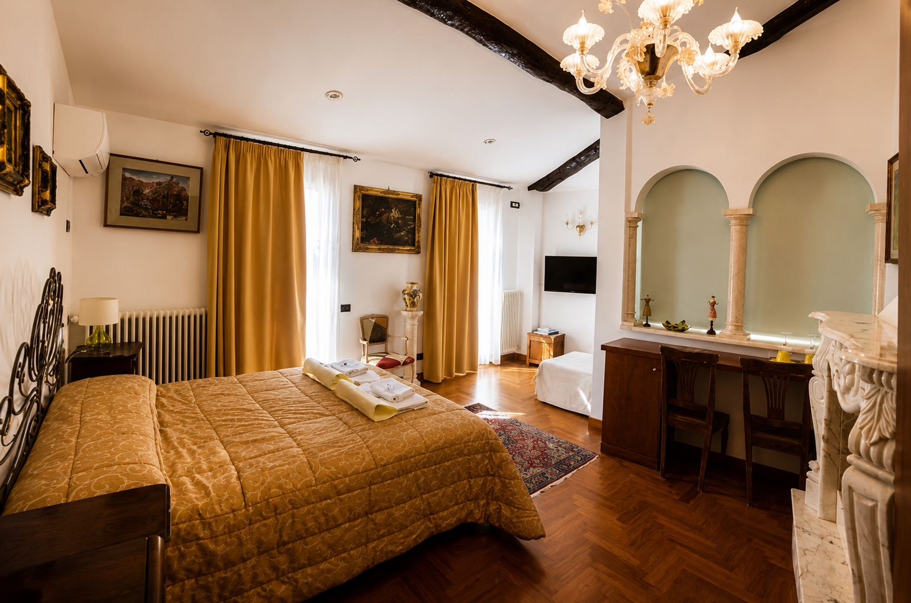
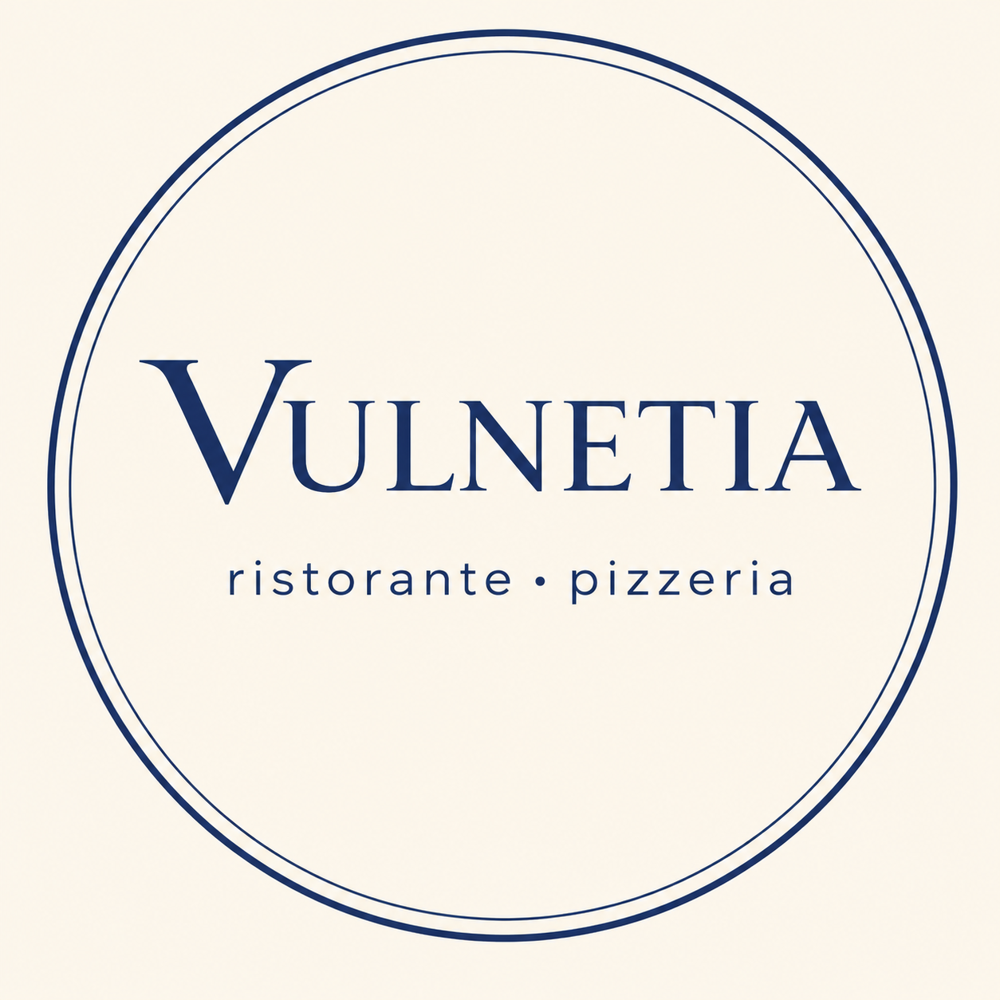
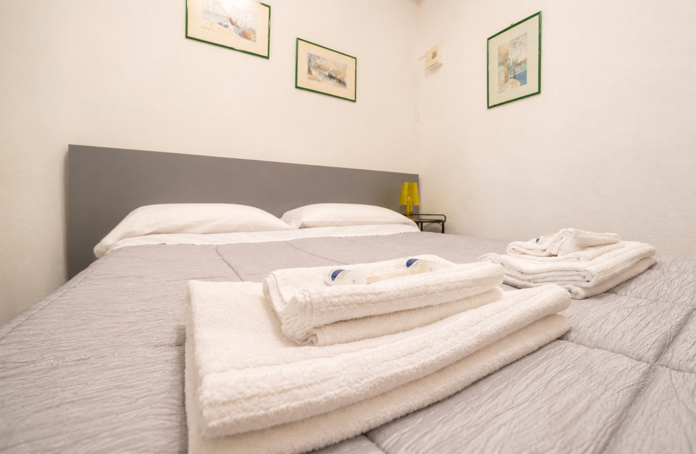
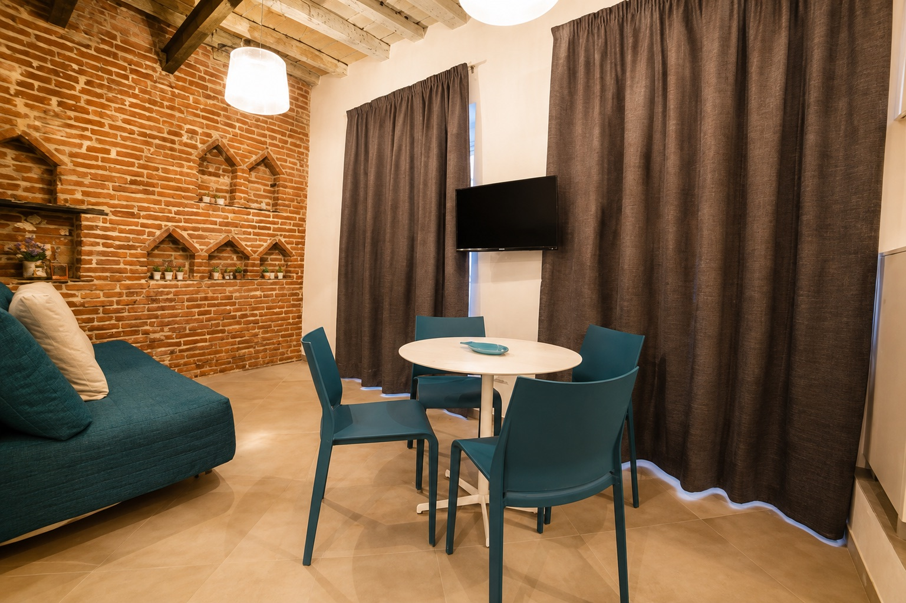
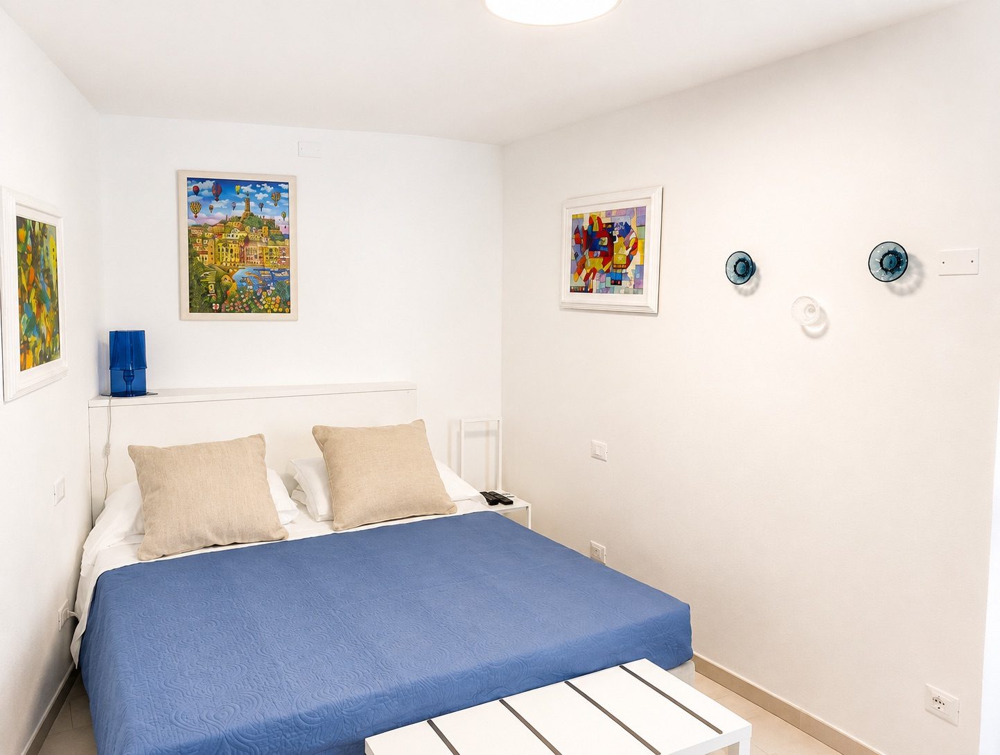
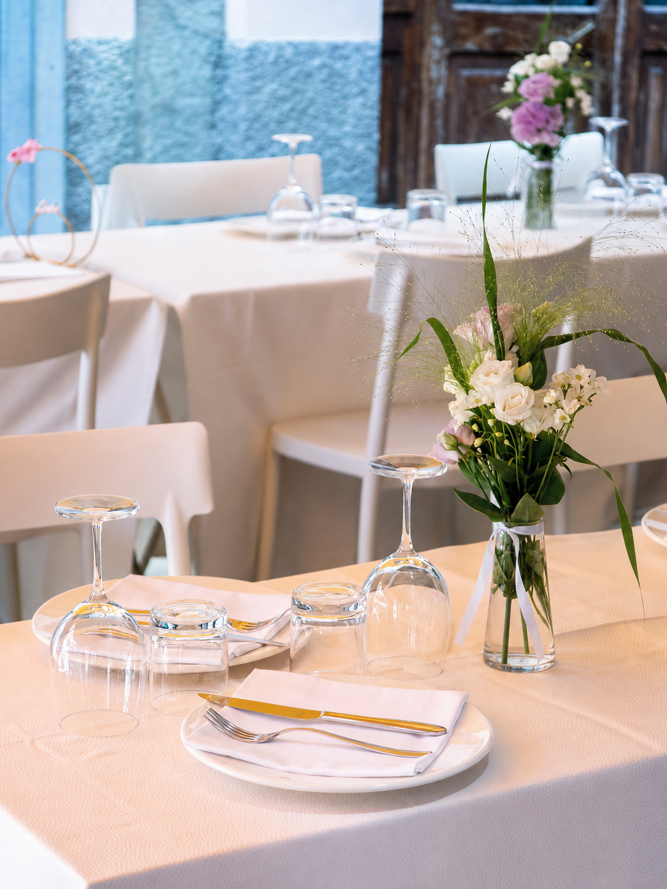

The most complete choice

Vernazza | Cinque Terre
Rooms, restaurant, Ligurian cuisine and pizzeria
Rooms, restaurant and pizzeria in Piazza Guglielmo Marconi: hospitality, Ligurian seafood, pizza and Italian wines in the heart of Vernazza.
Rooms
Four alternatives, one simple path: choose the property, compare the available options and send your request directly on WhatsApp.

The most complete choice

Intimate and direct

Room or apartment

Small Studio

The restaurant
Vulnetia overlooks the village's seafront square: a direct, welcoming address for lunch, dinner and slow breaks with Ligurian cuisine, seafood, pizza and selected Italian products.
From lunch in the square to dinner by the sea, every moment stays close to Vernazza's rhythm.
Reviews
"A special location in the center of Vernazza, perfect for a sea-view break."
"Pizza, seafood and Ligurian dishes in a square that stays with you after the trip."
"An informal restaurant, convenient for lunch and dinner after the sea, trails and narrow lanes."
Public rating shown around 3.5/5
Contact
In the heart of Vernazza's seafront square, between the marina and the village lanes.
For confirmations and reservations, call the restaurant directly.